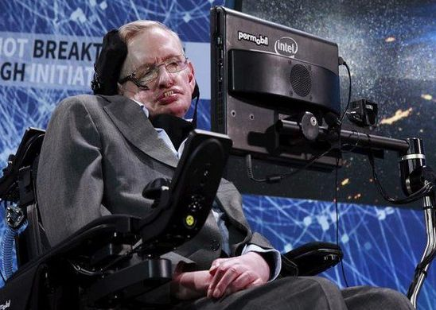

my Experience with als
-stephen hawking
about the author
- Stephen Hawking: British theoretical physicist, Lucasian Professor of Mathematics at the University of Cambridge, and Fellow of Gonville and Caius College, Cambridge.
- Renowned for contributions to cosmology and quantum gravity, especially work on black holes.
- Published extensive research discussing his theories and cosmology.
- Bestselling author of "A Brief History of Time," on British Sunday Times list for 237 weeks.
- Career spanning over 40 years, known as an academic celebrity.
- Received numerous awards, including Honorary Fellow of the Royal Society of Arts.
- Suffered from ALS, or Lou Gehrig's Disease, leaving him almost completely paralyzed until his death in 2018.
UNDERSTANDING ALS
- ALS, or Lou Gehrig's disease, is a progressive disorder affecting nerve cells in the brain and spinal cord, leading to loss of muscle control.
- Stephen Hawking diagnosed at 21.
- Initially given bleak prognosis.
- Defied expectations by surviving and continuing scientific pursuits despite challenges posed by the disease.
- ALS leads to the progressive loss of voluntary muscle control.
- Despite the grim prognosis, Hawking continued to make significant contributions to science.
- Hawking's resilience in the face of ALS inspired many and highlighted the potential for greatness despite adversity.
Summary
Stephen Hawking, the iconic theoretical physicist, faced the daunting challenge of amyotrophic lateral sclerosis (ALS), commonly known as Lou Gehrig's disease. Diagnosed at the age of 21, Hawking defied grim predictions and continued to make groundbreaking contributions to cosmology while dealing with the progressive loss of muscle control.
Despite the physical limitations imposed by ALS, Hawking's scientific legacy endured. His work on black holes, time, and the origins of the universe showcased his intellectual brilliance. Utilizing a speech-generating device, he communicated his ideas, proving the resilience of the human spirit.
While this summary does not capture a personal connection, it reflects on the inspirational aspect of Hawking's journey. His life serves as a testament to the strength of the human mind and the potential for greatness even in the face of significant adversity.
video(tamil)
Video-Reference:Witty Garden
video(English)
Video-Benita Samuel(Eng-Dep-Shift 2)


At 65, Stephen managed a backflip (yes, literally!) In 2007, when Stephen was 65 years old, he got the chance of a lifetime: experiencing zero-gravity. Taking off from space shuttle's runway at Kennedy Space Center, Stephen took flight in a specially modified jet that gives passengers an experience of zero gravity.